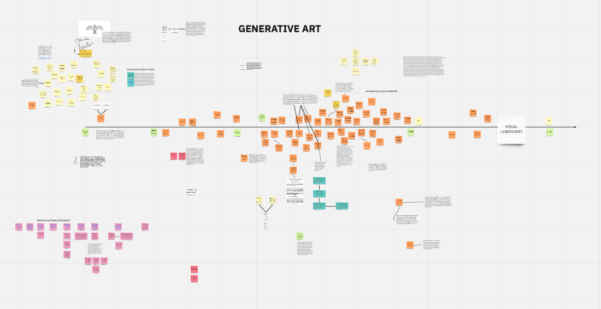
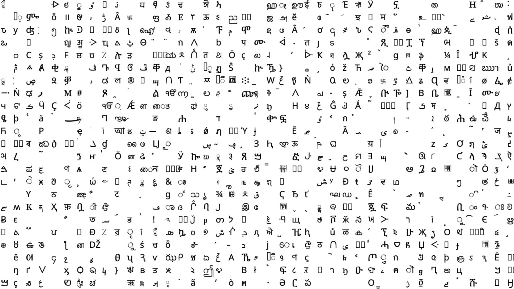

Future of Generative Art
Generative art is any piece of artwork that is autonomously generated using a series of instructions or following a set of rules. Although more commonly associated with art created using computers, I believe generative art is more about the artistic approach and the process, and not just about the tool. Similar to parametric architectural design, or algorithmic art, it is a result of a set of instructions defined by the creator. In this article, I trace through the history of generative art practice, to show how it can be the dominant art movement of the future.

Mapping everything generative art
The Past
As computers became more and more accessible, artists started using computers to create art. This medium was appealing to artists as they could now create art that would have taken too long to create by hand. Artists could iterate their art, and accelerate their creative process. The computer also allowed for the exploration of visual styles that had never been seen before. The starkness and lack of human touch led to compositions that were completely unknown and alien. Computers became a tool for artists, like a paintbrush or a mechanical pencil, which allowed them to execute their ideas. Some of the first generative artists were researchers and scientists who used computers in their work, such as Michael Noll. Well-known pioneers in the Generative Art Movement are John Maeda, Vera Molnar, Manfred Mohr, Frieder Nake, Jared Tarbell amongst many others.

Composition inspired by Casey Reas's work
The Present
Today, it has become easier to find diverse tools to create generative art, causing a growth in the number of practicing generative artists. Artists like Casey Reas, Ben Fry, Daniel Shiffman, and Zach Lieberman have created both the tools and the art, to influence others to access and create generative works of their own.

Generative unicode piece
The Future
The practice and popularity of generative art has evolved along with technological advancements. Now, we are at the cusp of tools such as machine learning, and perhaps one day, artificial intelligence— that can change the landscape of generative art. These technologies will allow artists to unlock doors to an era of art we haven’t even imagined yet. Artists such as Memo Atken, Mario Klingemann, Refik Anadol are not only using existing machine learning tools to create art, but also contributing to the field of machine learning through their practice. I started creating generative art about 7 years ago, using a tool called Processing. As an artist and designer, I was enamoured by the potential to use design to create art. Processing became my canvas, and code was my brush. Generative art processes have allowed me to translate complex concepts and thoughts into art. I feel generative art is poised to become the dominant art movement of the future, that will push us to create art, the likes of which have never been imagined before.